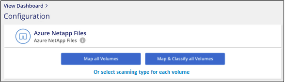
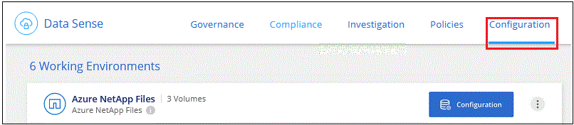

Note di rilascio
Note di rilascio
Introduzione alla classificazione BlueXP per Azure NetApp Files
 Suggerisci modifiche
Suggerisci modifiche
Completa alcuni passaggi per iniziare a utilizzare la classificazione BlueXP per Azure NetApp Files.
Avvio rapido
Inizia subito seguendo questi passaggi o scorri verso il basso fino alle sezioni rimanenti per ottenere dettagli completi.
 Individuare i sistemi Azure NetApp Files che si desidera sottoporre a scansione
Individuare i sistemi Azure NetApp Files che si desidera sottoporre a scansionePrima di eseguire la scansione dei volumi Azure NetApp Files, "BlueXP deve essere configurato per rilevare la configurazione".
 Distribuire l'istanza di classificazione BlueXP
Distribuire l'istanza di classificazione BlueXP"Implementare la classificazione BlueXP in BlueXP" se non è già stata implementata un'istanza.
 Abilitare la classificazione BlueXP e selezionare i volumi da sottoporre a scansione
Abilitare la classificazione BlueXP e selezionare i volumi da sottoporre a scansioneFare clic su Compliance, selezionare la scheda Configuration e attivare le scansioni di compliance per i volumi in ambienti di lavoro specifici.
 Garantire l'accesso ai volumi
Garantire l'accesso ai volumiOra che la classificazione BlueXP è attivata, assicurarsi che sia in grado di accedere a tutti i volumi.
-
L'istanza di classificazione BlueXP richiede una connessione di rete a ciascuna subnet Azure NetApp Files.
-
Assicurarsi che queste porte siano aperte per l'istanza di classificazione BlueXP:
-
Per NFS: Porte 111 e 2049.
-
Per CIFS – porte 139 e 445.
-
-
I criteri di esportazione dei volumi NFS devono consentire l'accesso dall'istanza di classificazione BlueXP.
-
La classificazione BlueXP richiede le credenziali di Active Directory per eseguire la scansione dei volumi CIFS.
Fare clic su Compliance > Configuration > Edit CIFS Credentials (Modifica credenziali CIFS) e fornire le credenziali.
 Gestire i volumi che si desidera sottoporre a scansione
Gestire i volumi che si desidera sottoporre a scansioneSelezionare o deselezionare i volumi da sottoporre a scansione per avviare o interrompere la scansione della classificazione BlueXP.
Rilevamento del sistema Azure NetApp Files che si desidera sottoporre a scansione
Se il sistema Azure NetApp Files che si desidera sottoporre a scansione non è già in BlueXP come ambiente di lavoro, è possibile aggiungerlo all'area di lavoro in questo momento.
Implementazione dell'istanza di classificazione BlueXP
"Implementare la classificazione BlueXP" se non è già stata implementata un'istanza.
La classificazione BlueXP deve essere implementata nel cloud durante la scansione dei volumi Azure NetApp Files e deve essere implementata nella stessa regione dei volumi che si desidera sottoporre a scansione.
Nota: l'implementazione della classificazione BlueXP in una posizione on-premise non è attualmente supportata durante la scansione dei volumi Azure NetApp Files.
Gli aggiornamenti al software di classificazione BlueXP sono automatizzati finché l'istanza dispone di connettività Internet.
Abilitazione della classificazione BlueXP negli ambienti di lavoro
È possibile attivare la classificazione BlueXP sui volumi Azure NetApp Files.
-
Dal menu di navigazione a sinistra di BlueXP, fare clic su Governance > Classification (Governance > classificazione), quindi selezionare la scheda Configuration (Configurazione).

-
Selezionare la modalità di scansione dei volumi in ciascun ambiente di lavoro. "Scopri le scansioni di mappatura e classificazione":
-
Per mappare tutti i volumi, fare clic su Map All Volumes (Mappa tutti i volumi).
-
Per mappare e classificare tutti i volumi, fare clic su Map & Classify All Volumes (Mappa e classificazione di tutti i volumi).
-
Per personalizzare la scansione per ciascun volume, fare clic su o selezionare il tipo di scansione per ciascun volume, quindi scegliere i volumi da mappare e/o classificare.
Vedere Attivazione e disattivazione delle scansioni di compliance sui volumi per ulteriori informazioni.
-
-
Nella finestra di dialogo di conferma, fare clic su approva per avviare la scansione dei volumi con la classificazione BlueXP.
La classificazione BlueXP avvia la scansione dei volumi selezionati nell'ambiente di lavoro. I risultati saranno disponibili nella dashboard Compliance non appena la classificazione BlueXP completa le scansioni iniziali. Il tempo necessario dipende dalla quantità di dati, che potrebbe essere di pochi minuti o ore.

|
|
Verificare che la classificazione BlueXP abbia accesso ai volumi
Assicurarsi che la classificazione BlueXP possa accedere ai volumi controllando la rete, i gruppi di sicurezza e le policy di esportazione. È necessario fornire la classificazione BlueXP con le credenziali CIFS in modo che possa accedere ai volumi CIFS.
-
Assicurarsi che sia presente una connessione di rete tra l'istanza di classificazione BlueXP e ciascuna rete che include volumi per Azure NetApp Files.
Per Azure NetApp Files, la classificazione BlueXP può eseguire la scansione solo dei volumi che si trovano nella stessa regione di BlueXP. -
Assicurarsi che le seguenti porte siano aperte per l'istanza di classificazione BlueXP:
-
Per NFS: Porte 111 e 2049.
-
Per CIFS – porte 139 e 445.
-
-
Assicurarsi che i criteri di esportazione dei volumi NFS includano l'indirizzo IP dell'istanza di classificazione BlueXP in modo che possa accedere ai dati di ciascun volume.
-
Se si utilizza CIFS, fornire la classificazione BlueXP con le credenziali Active Directory in modo che possa eseguire la scansione dei volumi CIFS.
-
Dal menu di navigazione a sinistra di BlueXP, fare clic su Governance > Classification (Governance > classificazione), quindi selezionare la scheda Configuration (Configurazione).

-
Per ciascun ambiente di lavoro, fare clic su Edit CIFS Credentials (Modifica credenziali CIFS) e immettere il nome utente e la password necessari per la classificazione BlueXP per accedere ai volumi CIFS nel sistema.
Le credenziali possono essere di sola lettura, ma fornendo credenziali di amministratore si garantisce che la classificazione BlueXP possa leggere tutti i dati che richiedono autorizzazioni elevate. Le credenziali vengono memorizzate nell'istanza di classificazione BlueXP.
Se si desidera assicurarsi che i file "ultimi tempi di accesso" non vengano modificati dalle scansioni di classificazione BlueXP, si consiglia di disporre dei permessi Write Attributes in CIFS o Write Permissions in NFS. Se possibile, si consiglia di far parte dell'utente configurato con Active Directory di un gruppo principale dell'organizzazione che dispone delle autorizzazioni per tutti i file.
Dopo aver immesso le credenziali, viene visualizzato un messaggio che indica che tutti i volumi CIFS sono stati autenticati correttamente.

-
-
Nella pagina Configuration, fare clic su View Details (Visualizza dettagli) per esaminare lo stato di ciascun volume CIFS e NFS e correggere eventuali errori.
Ad esempio, l'immagine seguente mostra quattro volumi, uno dei quali non è in grado di eseguire la scansione a causa di problemi di connettività di rete tra l'istanza di classificazione BlueXP e il volume.

Attivazione e disattivazione delle scansioni di compliance sui volumi
È possibile avviare o interrompere scansioni di sola mappatura, o scansioni di mappatura e classificazione, in un ambiente di lavoro in qualsiasi momento dalla pagina di configurazione. È inoltre possibile passare da scansioni di sola mappatura a scansioni di mappatura e classificazione e viceversa. Si consiglia di eseguire la scansione di tutti i volumi.
Per impostazione predefinita, lo switch nella parte superiore della pagina per le autorizzazioni Scan when missing "write attributa" (Esegui scansione quando mancano gli attributi di scrittura) è disattivato. Ciò significa che se la classificazione di BlueXP non dispone di permessi di scrittura in CIFS o di permessi di scrittura in NFS, il sistema non eseguirà la scansione dei file perché la classificazione di BlueXP non può riportare l'"ultimo tempo di accesso" all'indicatore data e ora originale. Se non si ha alcun problema se l'ultimo tempo di accesso viene reimpostato, attivare l'interruttore per eseguire la scansione di tutti i file, indipendentemente dalle autorizzazioni. "Scopri di più".

| A: | Eseguire questa operazione: |
|---|---|
Abilitare le scansioni di sola mappatura su un volume |
Nell'area del volume, fare clic su Map (Mappa) |
Abilitare la scansione completa su un volume |
Nell'area del volume, fare clic su Map & Classify (Mappa e classificazione) |
Disattivare la scansione su un volume |
Nell'area del volume, fare clic su Off |
Abilitare le scansioni di sola mappatura su tutti i volumi |
Nell'area dell'intestazione, fare clic su Map (Mappa) |
Abilitare la scansione completa su tutti i volumi |
Nell'area dell'intestazione, fare clic su Map & Classify (Mappa e classificazione) |
Disattivare la scansione su tutti i volumi |
Nell'area dell'intestazione, fare clic su Off |
|
|
I nuovi volumi aggiunti all'ambiente di lavoro vengono sottoposti automaticamente a scansione solo se è stata impostata l'impostazione Map o Map & Classify nell'area di intestazione. Se l'opzione è impostata su Custom o Off nell'area heading, è necessario attivare la mappatura e/o la scansione completa su ogni nuovo volume aggiunto nell'ambiente di lavoro. |